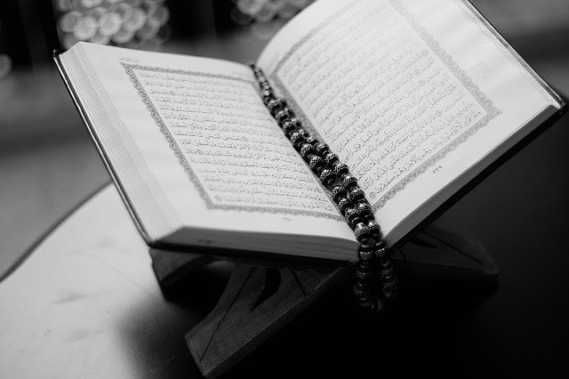

Allah is the Arabic name for God. The one and only creater of the universe and everything in it. We say "HE" for God only because the of the nature of the Arabic language. But it doesn't imply that Allah is a man. In fact Allah as we know Him is not a man or a woman and He is an entity like nothing we have ever known before and will ever know until the day of judgement. Whenever Muslims mention Allah's name or one of His names then they are supposed to praise Him too with the statement like "subhana 'hu wa ta'ala " which means may he be exalted and glorified.
Muhammad is the last and final messenger and prophet that we humans will ever know on earth. He came to the world after Jesus (who is also a real prophet) and he came to rectify the mistakes we made after we Jesus came and we denied and/or changed his message from the truth. Muhammad married Khadija and had 5 children. They were married for many years until she passed away. Afterwards he did marry multiple wives but all his marriages after Khadija were to help the Muslim faith grow or to protect widows and divorced women. He is slandered a lot in todays world out of ignorance of the people who do it, this is nothing new. He was tortured and slandered while he was alive by the ignorant people who did not want to change and accept one God as a belief. His steadfastness, truthfulness, and preserverence are some of the excellent qualities that make him a great prophet. Just as muslims praise Allah, they also praise Muhammad by saying "salli allahu alaihi wa salam" which Peace and blessings be upon him.
The Qur'an is the revelation of Allah that came done to Muhammad in the cave of Hera. It contains stories of the history of the universe. It tells of all the prophets and messengers who ever came to Earth, including Jesus, Moses, and Abraham. It is a holy book that millions of people memorize exactly the same way no matter what language they speak originally. That beauty in the Qur'an is that Muslims preserved it in his original form through memorizing in a systematic way using which is the grammatical rules for understanding and reading the Qur'an. Qur'an actualy means a recitation of the word of Allah. Technically, the name for the book people read with these word in it is called the "Mushaf".